Portfolio
This page features selected social media and digital design work I have created for brands, organizations, and class projects. My work focuses on visual storytelling, brand consistency, and creating content designed for digital audiences.
Mile High Cook
Social media content created for a private chef and catering brand, with a focus on luxury branding, food storytelling, and audience engagement.
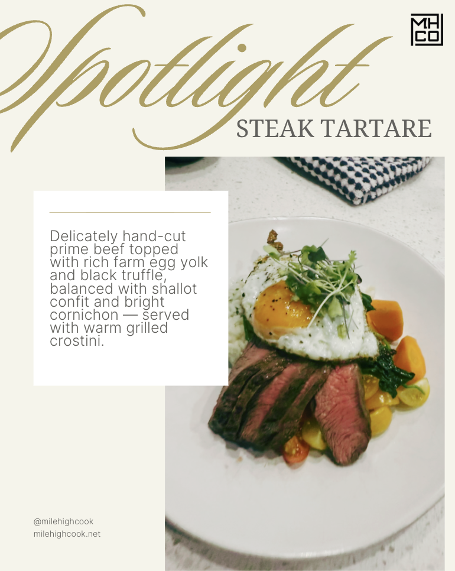
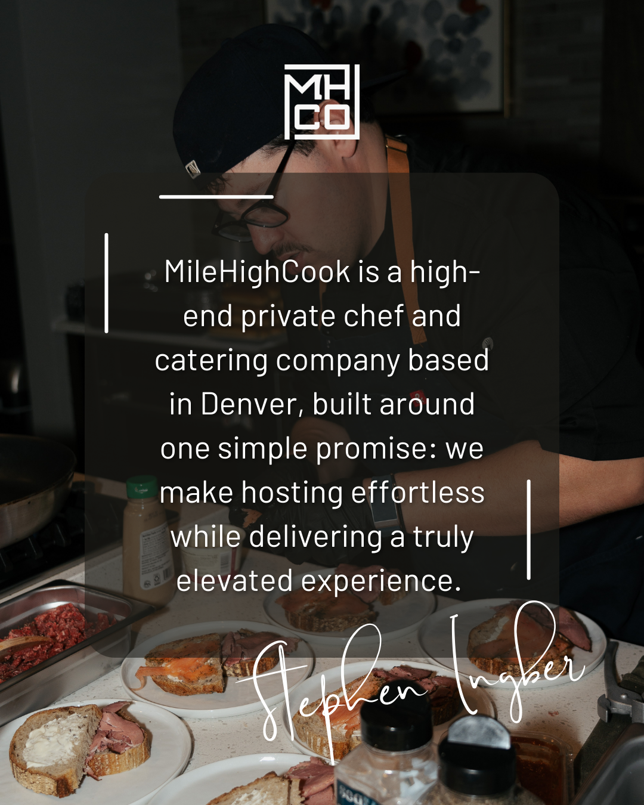
Deming Center for Entrepreneurship
Social and promotional content created for entrepreneurship-focused events, programming, and student engagement.
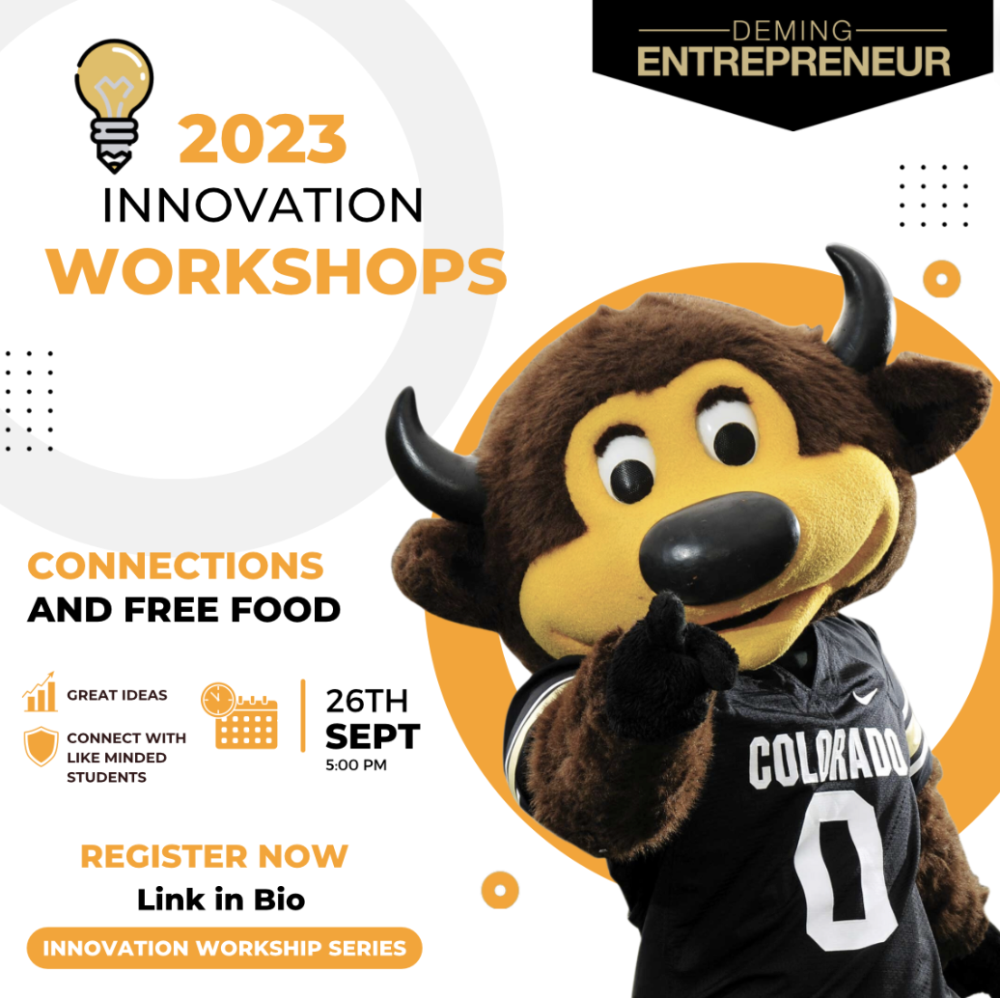
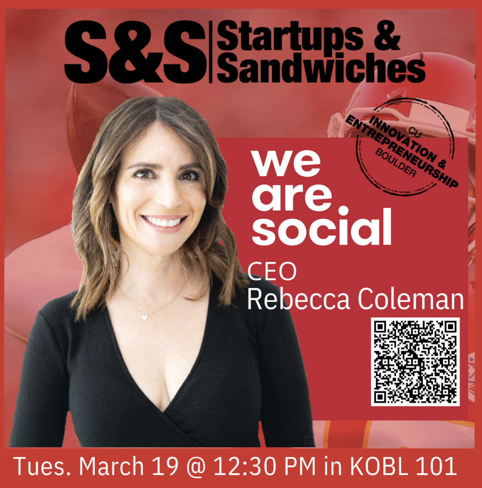
Triple Crown Sports
Digital content designed for sports marketing and event promotion, focused on strong visuals, energy, and audience appeal.
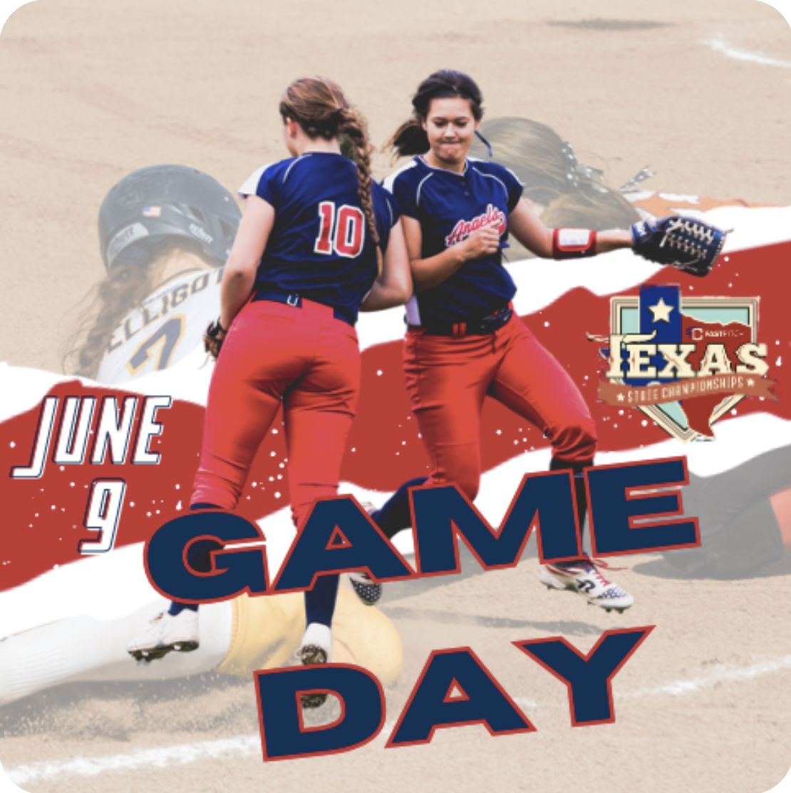
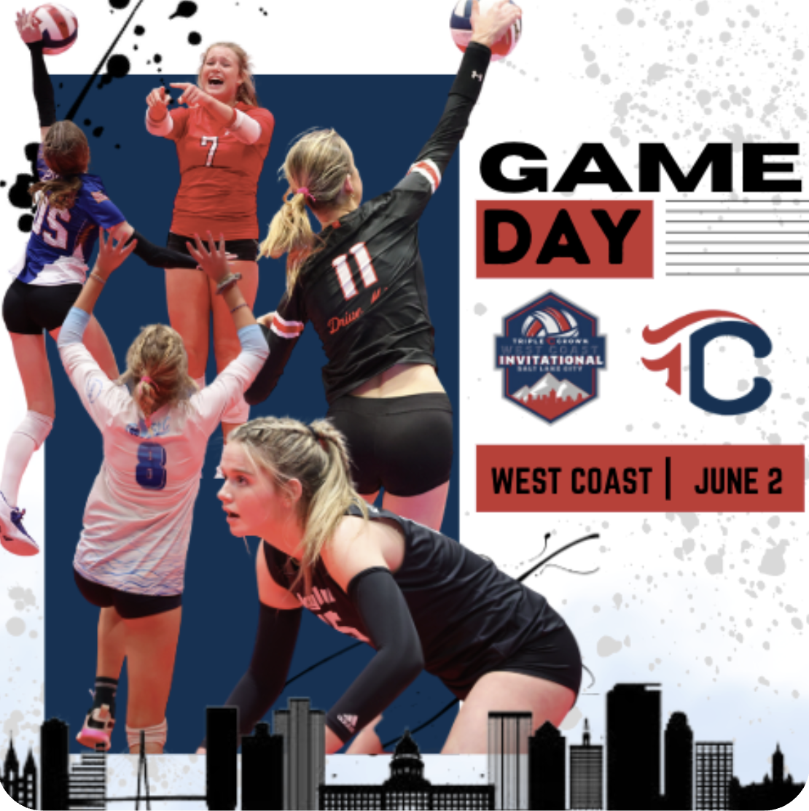
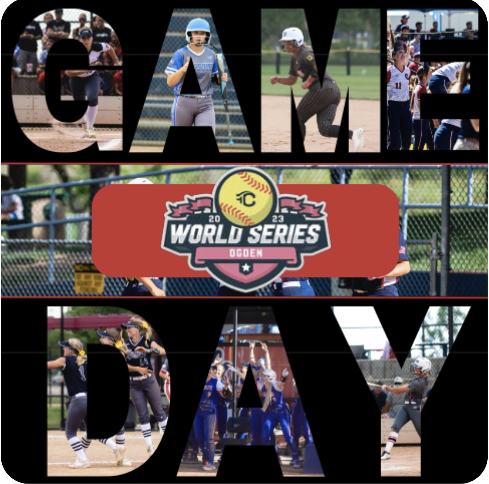
Digital Marketing Class
Academic work that demonstrates my ability to create strategic, brand-aware, and visually effective digital content.
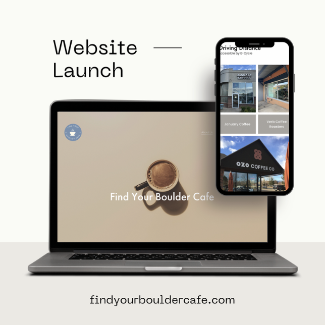
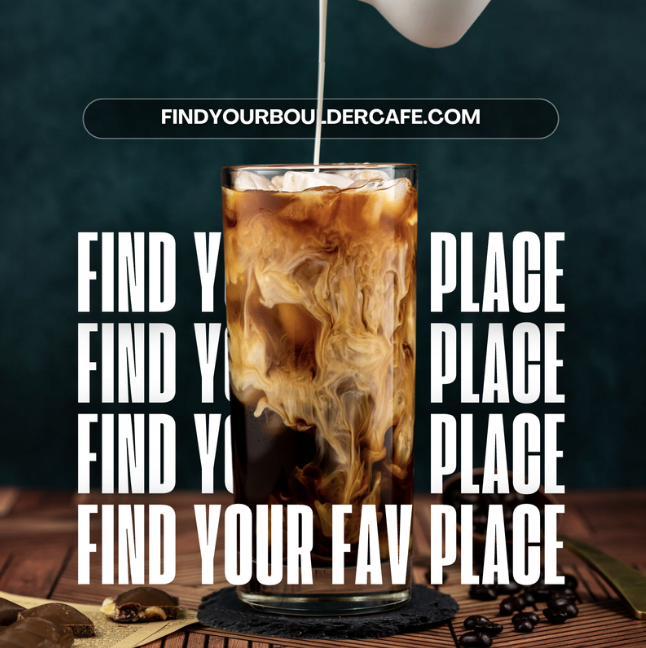
Turks Timeless Aesthetics
Social media designs created for an aesthetics brand, with a focus on beauty, education, and polished, feminine branding.
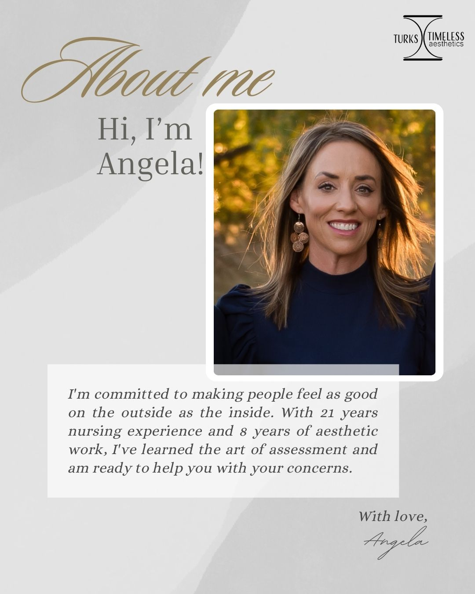
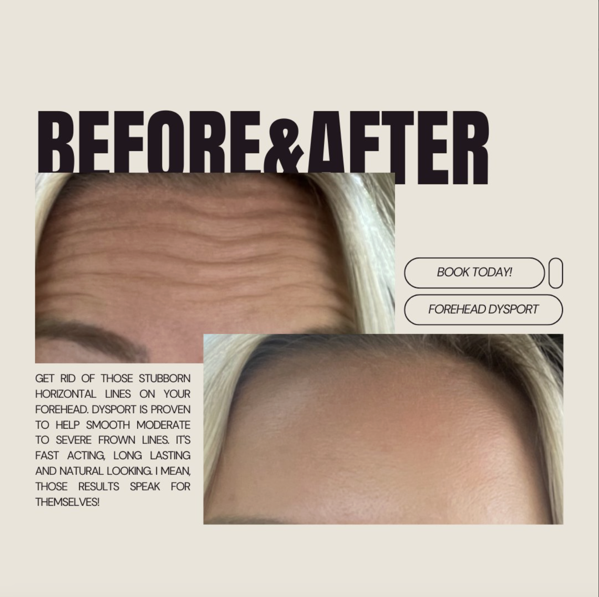
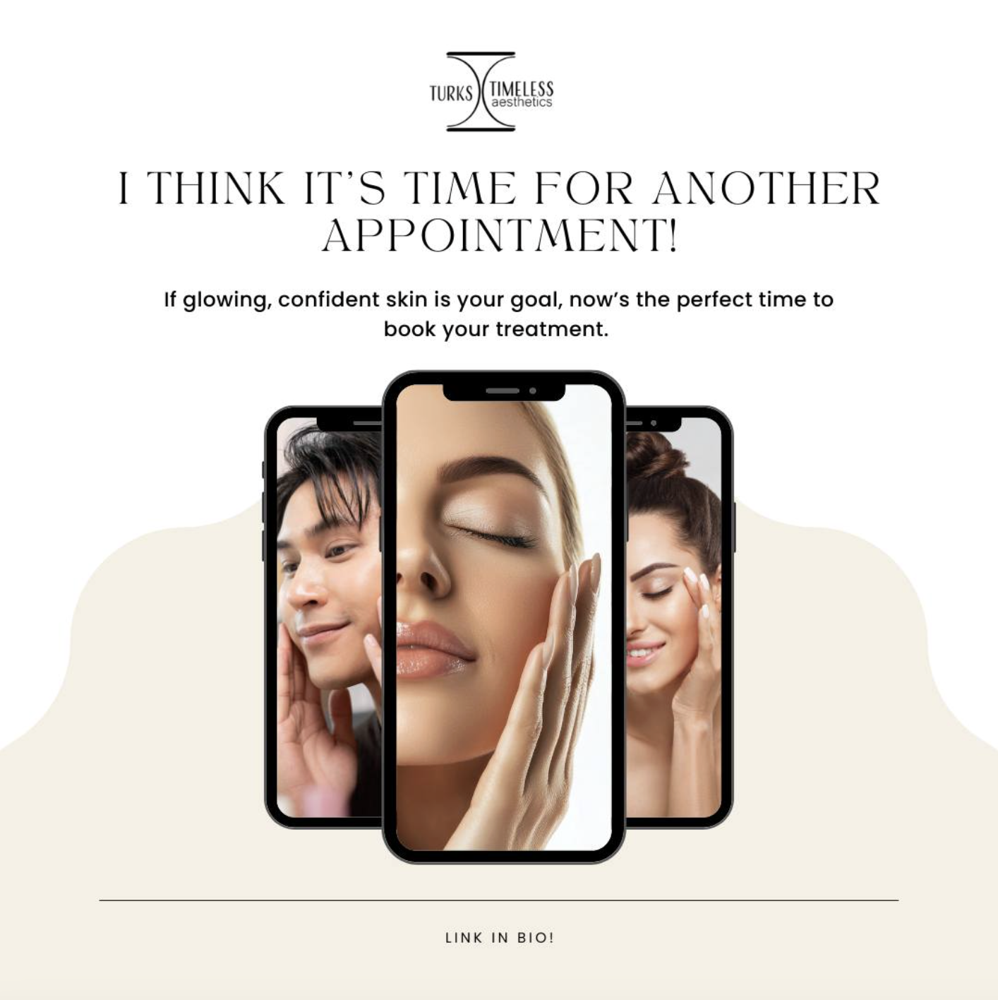